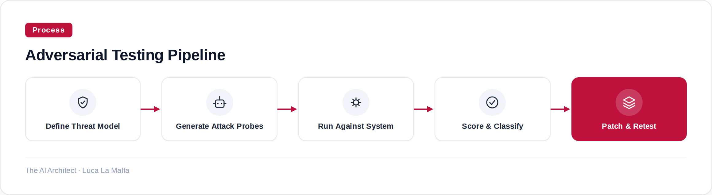
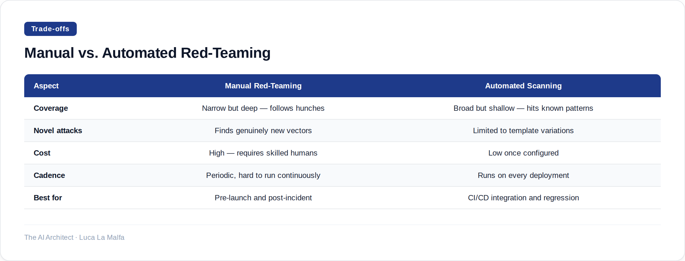

How to run structured adversarial testing on prompts, agents, and RAG pipelines — and what to do with what you find.
August 29, 2026
Most AI systems I audit in enterprise settings have never been deliberately attacked by the people who built them. They've been tested for correctness — does the chatbot answer the right question? — but not for failure modes that only appear when someone is actively trying to break things. That gap is where red-teaming lives, and closing it is not optional if you're deploying anything that touches real users or real data.
Red-teaming in the LLM context means deliberately probing a system with adversarial inputs: prompt injections, jailbreak attempts, data exfiltration vectors, role-confusion attacks, and inputs designed to make the model contradict its own instructions or reveal information it shouldn't. The goal isn't to find every possible bug — it's to find the categories of failure your system is structurally vulnerable to, so you can address them before someone else does.
There's a common misconception worth addressing directly: red-teaming is not the same as evaluation. Evaluation tells you how well a model performs on a distribution of expected inputs. Adversarial testing tells you what happens at the edges — and at the edges is where trust breaks. A RAG pipeline that summarizes documents beautifully 98% of the time can still be coaxed into ignoring its retrieval context entirely and hallucinating confidently if the right instruction appears in a retrieved chunk. That's a prompt injection via the retrieval path, and standard evals will never surface it.
The other thing I push back on is the idea that this is a one-time exercise. System prompts change. New tools get added to agents. The underlying model gets swapped or fine-tuned. Each of those changes reopens attack surface. Red-teaming needs to be part of your deployment pipeline, not a checkbox you tick before launch.

A useful threat model for an LLM system covers at least four categories. First, prompt injection — inputs that attempt to override or hijack the system prompt, whether they arrive via the user turn or through retrieved content. Second, information leakage — probes that try to extract the system prompt itself, internal tool schemas, or data from other users' sessions. Third, policy bypass — attempts to get the model to produce content it's been instructed to refuse, typically through roleplay framing, hypothetical framing, or persona switching. Fourth, behavioral drift — inputs that don't look adversarial at all but gradually shift the model's behavior over a long conversation. That last category is the hardest to catch with automated tools and often requires human red-teamers.

In practice I run both. Automated scanning — using tools like promptfoo — catches the known vulnerability classes every time a system prompt changes or a new tool is wired into an agent. Manual sessions, which I run with a small group of people who genuinely enjoy breaking things, surface the weird stuff: the multi-step social engineering sequences, the attacks that require understanding the business context, the edge cases that no template library has thought of yet. The automated pass tells me the floor; the manual pass tells me what I don't know I don't know.
One thing I've learned the hard way: the quality of your attack probes determines everything. Generic jailbreak lists from GitHub are table stakes — any well-configured system should handle those. What actually matters is building probes that are specific to your system's context. If you're building a legal document assistant, your red-team probes should include attempts to get legal advice, attempts to extract client data mentioned in retrieved documents, and attempts to impersonate the system's persona in ways that could mislead a real user. Generic probes won't tell you whether your specific deployment is safe.
The probe library I actually maintain
For every production deployment I run, I keep a versioned YAML file of adversarial probes that are specific to that system — its domain, its tools, its known sensitive data categories. It starts small, maybe 30-40 probes, and grows every time a real user does something unexpected or a manual red-team session surfaces a new pattern. That file runs in CI on every system prompt change. It's not glamorous, but it's caught three serious regressions in the past year that would have shipped to production otherwise.
promptfoo/promptfoo — Red-teaming and vulnerability scanning for prompts, agents, and RAG.